CR BLK 40 · Kính lái
VLT 41%, TSER 58%, IRER 67%, giảm chói 44%. Phù hợp người ưu tiên giảm chói và vẻ kính đậm hơn; nên xem mẫu nếu thường đi đêm, đi mưa hoặc đường thiếu sáng.
Cấu hình tham khảo CR BLK 40 / 35 / 15 giúp cân bằng tầm nhìn kính lái, giảm chói và sự riêng tư khoang sau. Hãy chọn theo mẫu xe, kính nguyên bản và thói quen lái trước khi chốt.
Không cần biết đúng mã phim — chỉ cần cho Auto365 biết mẫu xe và thói quen lái.
Thông tin nhanh: CR BLK Pro là gói phối mã do Auto365 xây dựng từ phim 3M Crystalline CR BLK, không phải mã riêng của 3M. Cấu hình tham khảo 40/35/15 có giá 12,9–18,3 triệu đồng tùy nhóm xe; người lái đêm nhiều nên thử CR BLK 50/60 trước khi chốt.
Chọn theo từng vị trí kính: Kính lái ưu tiên tầm nhìn và mức giảm chói; sườn trước cân bằng quan sát; khoang sau thiên về riêng tư. Mã phim cuối cùng được tư vấn theo kính nguyên bản và thói quen lái.
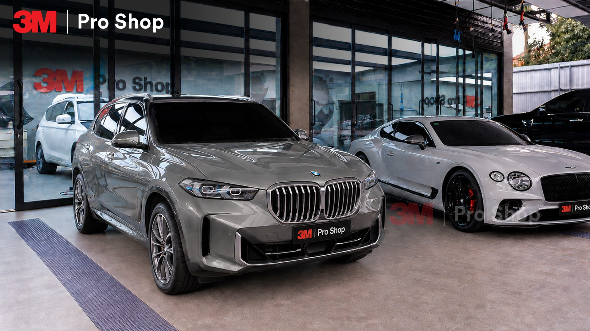
Các số dưới đây được đối chiếu theo Table B của 3M. Khi chọn mã, cần xét cả kính nguyên bản và vị trí quan sát trên xe để cân bằng tầm nhìn, giảm chói và riêng tư.
VLT 41%, TSER 58%, IRER 67%, giảm chói 44%. Phù hợp người ưu tiên giảm chói và vẻ kính đậm hơn; nên xem mẫu nếu thường đi đêm, đi mưa hoặc đường thiếu sáng.
VLT 33%, TSER 60%, IRER 67%, giảm chói 55%. Tạo sự riêng tư rõ hơn CR BLK 40 nhưng vẫn cân bằng cho vị trí thường xuyên quan sát gương.
VLT 14%, TSER 64%, IRER 66%, giảm chói 81%. Thiên về riêng tư cho sườn sau và kính lưng; không nên mặc định dùng cho kính lái.
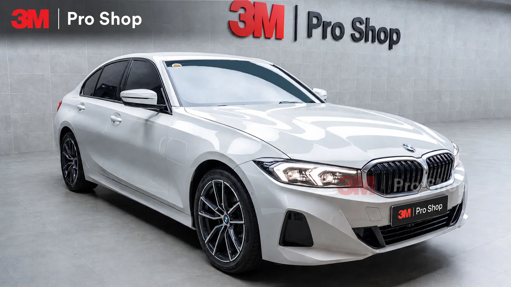
Trả lời bốn câu ngắn. Auto365 sẽ đưa ra gợi ý ban đầu, giá theo xe và điểm cần kiểm tra trước khi chốt.
Giá tham khảo trọn xe theo nhóm xe; phạm vi hạng mục, panorama và xử lý phim cũ được xác nhận trước khi thi công.
CR BLK 40 + 35 + 15
CR BLK 40 + 35 + 15
CR BLK 40 + 35 + 15
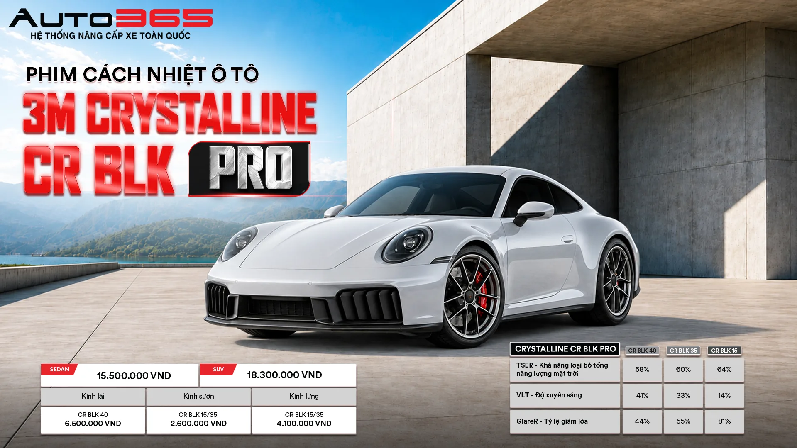
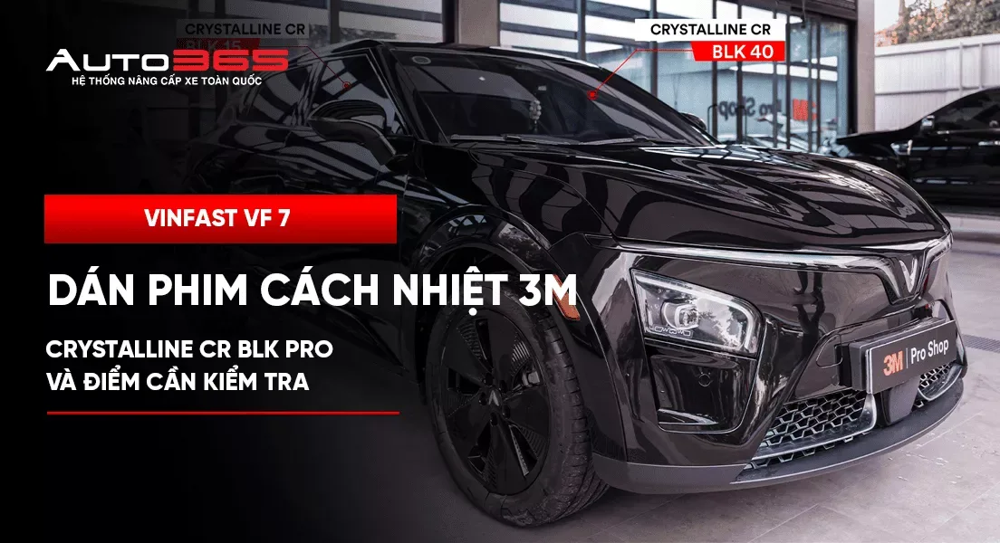
Cấu hình đã dán: CR BLK 40 / 15 / 15
Xem hồ sơ xe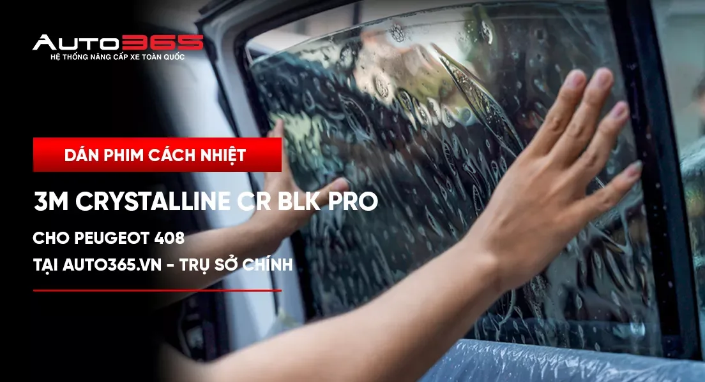
Cấu hình tư vấn: CR BLK 40 / 35 / 15
Xem tư vấn cho Peugeot 408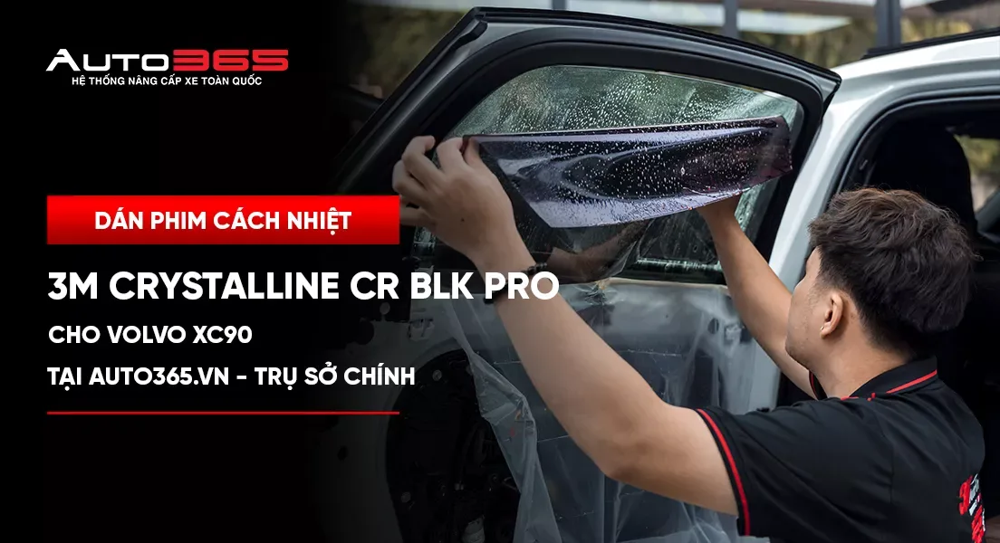
Cấu hình đã dán: CR BLK 40 / 15 / 15 · Panorama: CR BLK 15
Xem hồ sơ xe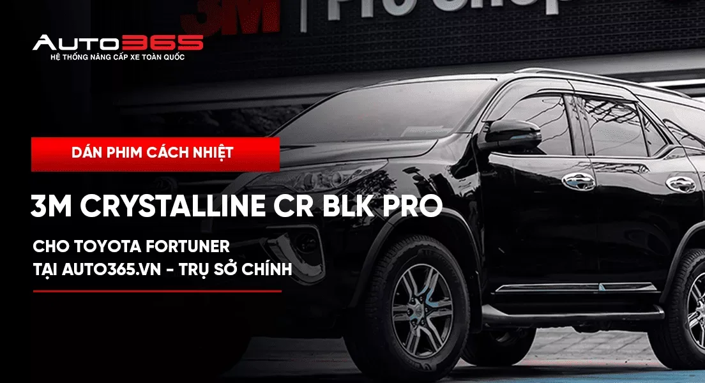
Cấu hình đã dán: CR BLK 40 / 15 / 15
Xem hồ sơ xe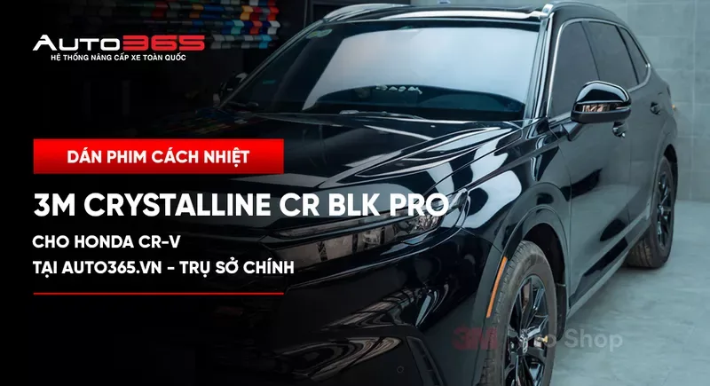
Cấu hình đã dán: CR BLK 40 / 15 / 15
Xem hồ sơ xe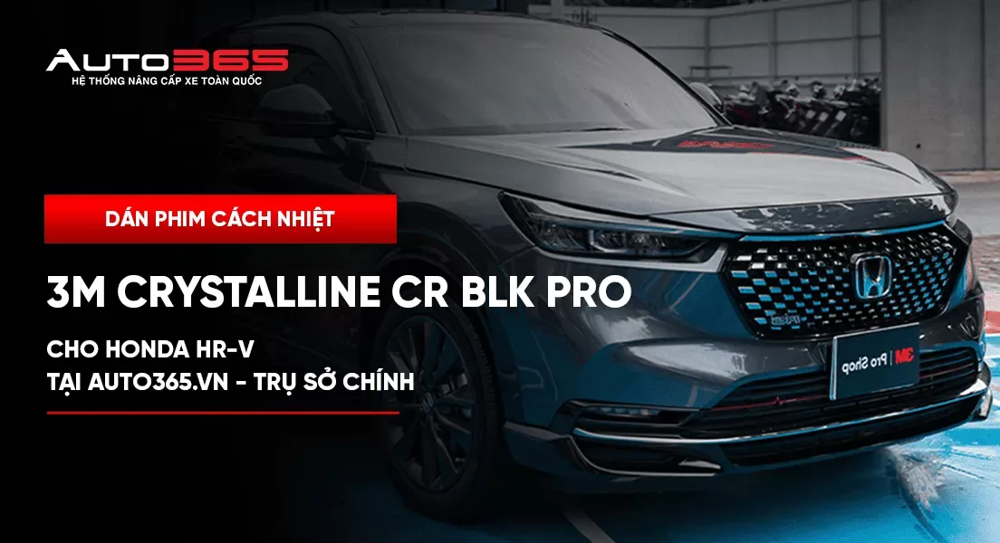
Cấu hình đã dán: CR BLK 40 / 15 / 15
Xem hồ sơ xe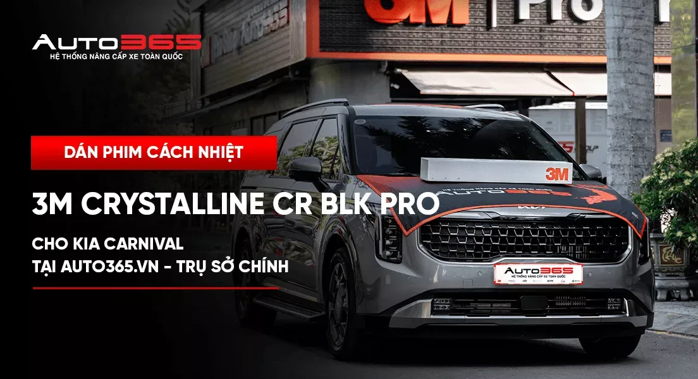
Cấu hình đã dán: CR BLK 40 / 15 / 15
Xem case thực tế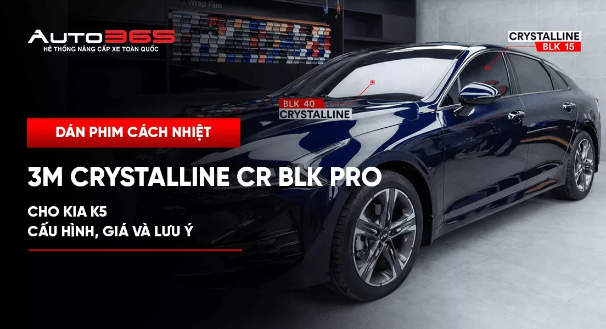
Cấu hình đã dán: CR BLK 40 / 15 / 15
Xem case thực tếHệ thống Auto365
Phủ sóng toàn quốc
Auto365.vn – Trụ Sở Chính là điểm tư vấn, đặt lịch và thi công phim 3M trong hệ sinh thái Auto365/365Group. Khách hàng có thể đối chiếu nguồn phim, quy trình thi công và hồ sơ eWarranty trước khi chốt.
Điểm tiếp nhận lịch và tư vấn cấu hình theo từng vị trí kính; phạm vi thi công được xác nhận khi khách đặt lịch.
4/4/1/7 Đường số 3, Phường Hiệp Bình, TP. Hồ Chí MinhTrung tâm trải nghiệm vật liệu, đào tạo và chuẩn hóa kỹ thuật; khách đặt lịch dịch vụ qua Auto365.vn – Trụ Sở Chính.
4/4/3/3 Đường số 3, Phường Hiệp Bình, TP. Hồ Chí MinhTra cứu điểm Auto365 gần anh/chị và xác nhận trước dịch vụ 3M đang được triển khai tại điểm đó.
Hỗ trợ tư vấn toàn quốcTừ điểm thi công, tư vấn cấu hình, xe thực tế đến hồ sơ eWarranty — Auto365 công khai thông tin để khách hàng kiểm tra trước và sau khi sử dụng dịch vụ.
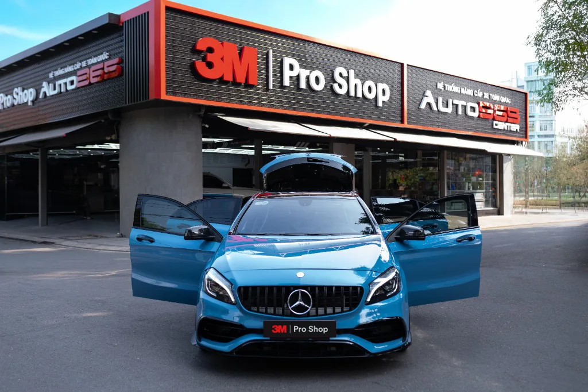
Kiểm tra điểm thi công →Tư vấn cấu hình theo từng xe và nhu cầuĐối chiếu TDS 3M, kính nguyên bản và nhu cầu lái để chọn mã phim theo từng vị trí kính.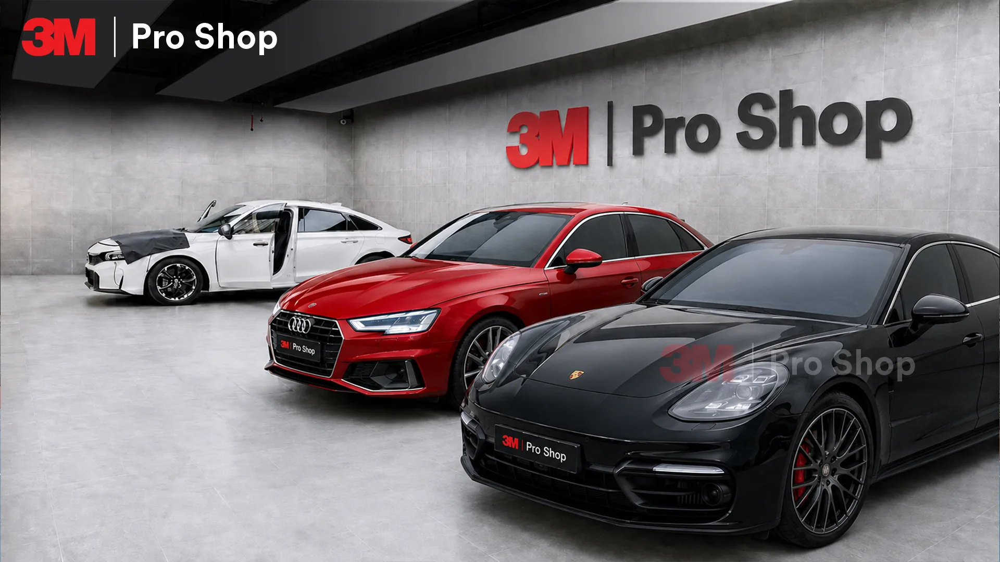
Xem cơ sở tư vấn →Quy trình rõ ràng và case thực tế để đối chiếuTham khảo xe thật và cấu hình đã dán để biết cách CR BLK Pro được triển khai trên từng mẫu xe.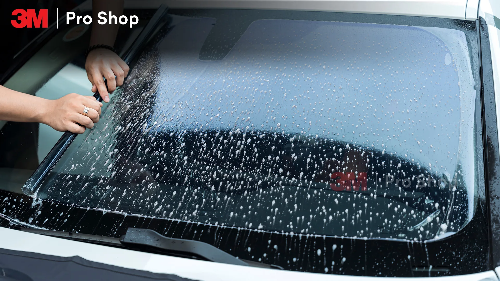
Xem case xe thực tế →Có hồ sơ sau khi bàn giaoĐối chiếu mã phim, đơn vị thi công và điều kiện eWarranty để tiếp tục kiểm tra sau dịch vụ.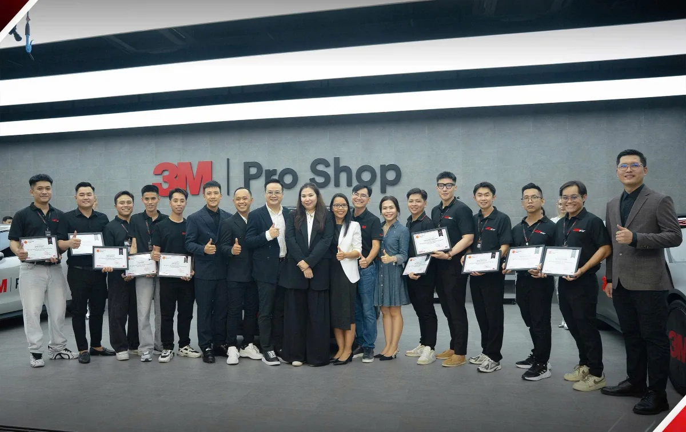
Xem bảo hành eWarranty →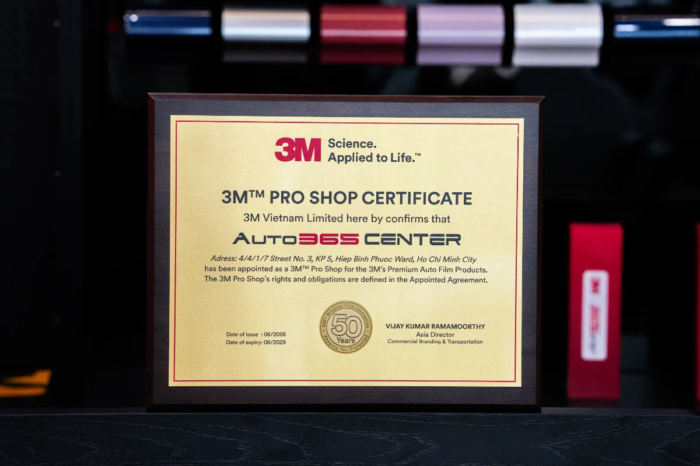
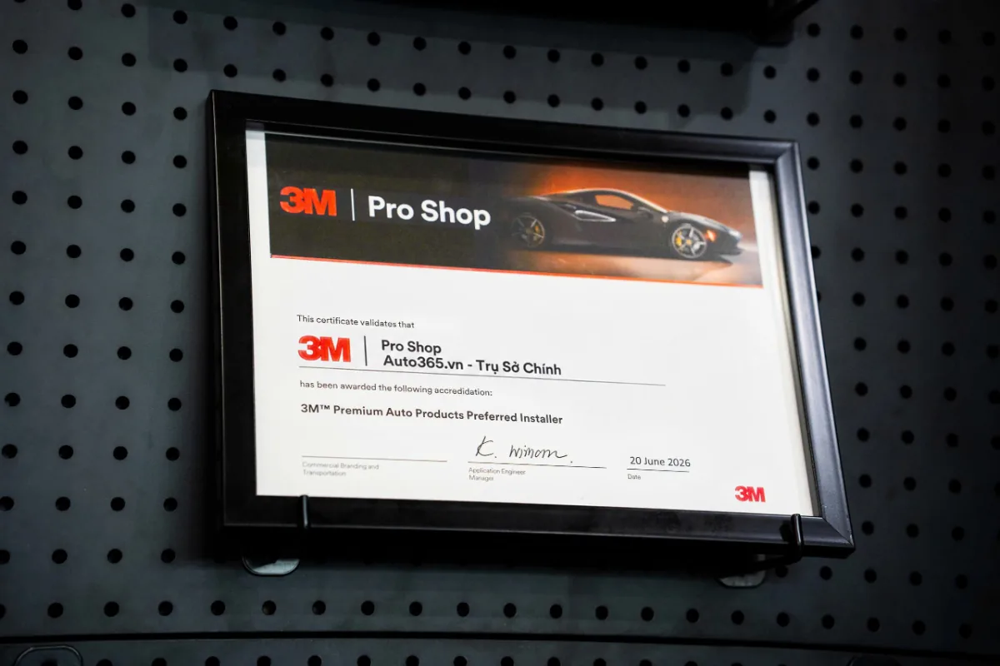
Xem thêm video và hình ảnh thi công thực tế tại Auto365.
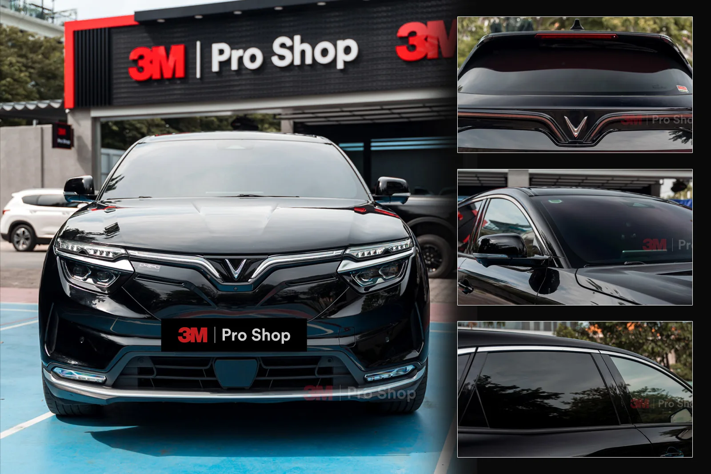
| Thông số | CR BLK 40 | CR BLK 35 | CR BLK 15 |
|---|---|---|---|
| VLT (phim + kính Auto 75) | 41% | 33% | 14% |
| TSER | 58% | 60% | 64% |
| IRER | 67% | 67% | 66% |
| IRR | 98% | 98% | 98% |
| UV Block | 99,9% | 99,9% | 99,9% |
| Giảm chói | 44% | 55% | 81% |
IRER được xác định trong dải 780–2.500 nm, tính cả năng lượng hồng ngoại truyền qua và phần hấp thụ rồi tái bức xạ vào xe, trên tổ hợp phim + kính. IRR dùng dải 900–1.000 nm và được đo trên phim còn lớp liner, không có kính. Hai chỉ số có phạm vi và điều kiện khác nhau, không được đổi tên hoặc so sánh trực tiếp.
Nguồn kỹ thuật: 3M™ Automotive Window Film Crystalline™ Series, Technical Data Sheet, Revision E, May 2024, Table B — Solar Properties on Auto 75 Glass. Dữ liệu áp dụng cho tổ hợp phim + kính Auto 75 theo Table B (kính ô tô xanh dày 6 mm, VLT nền 73%), thử theo ANSI/NFRC 200. Các giá trị là hiệu suất ước tính và chỉ dùng để tham khảo. Ngày đối chiếu: 31/08/2026.
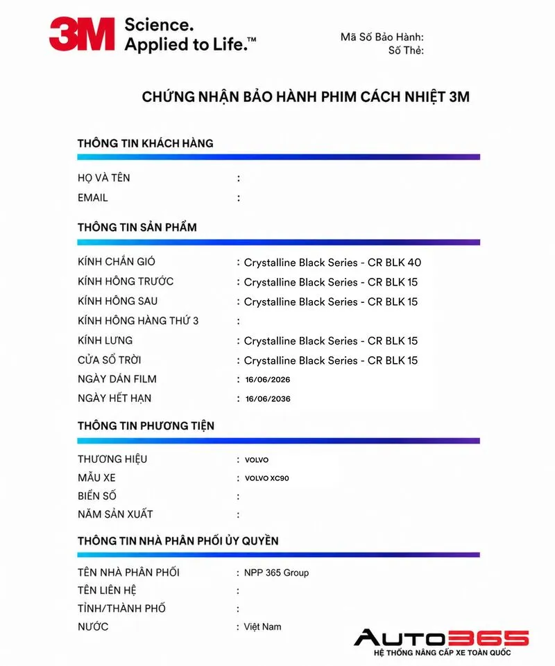
Ảnh hồ sơ eWarranty tham khảo trên xe Volvo XC90.
Theo 3M Việt Nam, phim cách nhiệt ô tô 3M được hỗ trợ bảo hành lên tới 10 năm khi được bán và lắp đặt bởi đại lý được ủy quyền. Thời hạn và phạm vi cuối cùng căn cứ hồ sơ eWarranty và điều kiện áp dụng.
Quy trình tại Auto365 được thực hiện theo từng bước để bảo đảm tầm nhìn, độ bám và hồ sơ bảo hành:
Để lại thông tin cơ bản. Nhân viên sẽ xác nhận model xe, kính nguyên bản, mã phim từng vị trí và báo giá trước khi thi công.
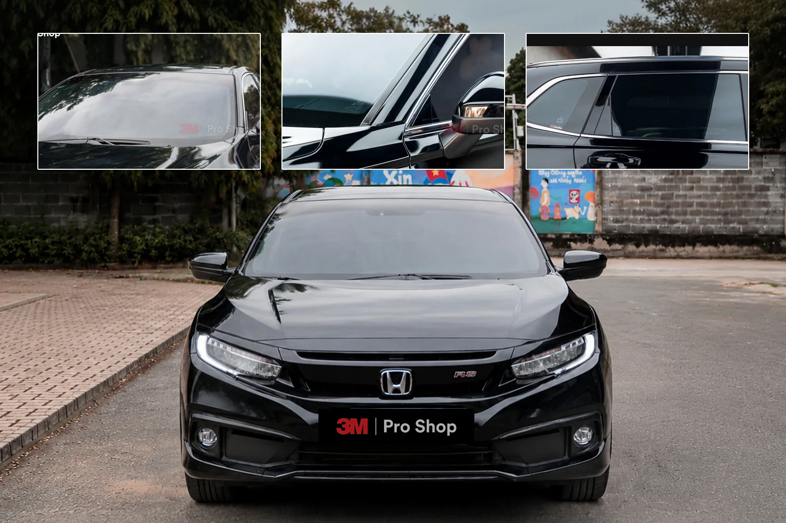
Tìm hiểu kỹ về 3M Crystalline CR BLK Pro trước khi chọn cấu hình phù hợp với xe của anh/chị.
3M Crystalline CR BLK là dòng phim cách nhiệt ô tô sử dụng cấu trúc vật liệu quang học đa lớp, hướng đến kiểm soát nhiệt, hỗ trợ cản tia UV, giảm chói và duy trì khả năng quan sát phù hợp cho từng vị trí kính.
CR BLK Pro phù hợp chủ xe thường đi ban ngày, đi đường dài, đậu xe ngoài trời, muốn khoang sau riêng tư hơn hoặc muốn chọn nhanh một cấu hình đã được phối theo từng vị trí kính.
Phim tối hơn không đồng nghĩa luôn tốt hơn. Kính lái và sườn trước cần cân bằng giữa giảm chói, độ sáng quan sát, màu kính nguyên bản và điều kiện đi đêm hoặc trời mưa.
Xe điện, xe có trần kính hoặc panorama cần được đo diện tích riêng. Khu vực phía trên có thể làm tăng tải nhiệt trong khoang, vì vậy panorama không mặc định nằm trong giá trọn xe.
Quy trình nên gồm kiểm tra kính, vệ sinh bề mặt, cắt phim, xử lý mép phim, kiểm tra bọt nước/bụi và nghiệm thu tầm nhìn. Mã phim từng vị trí cần được ghi rõ khi bàn giao.
Theo 3M Việt Nam, phim cách nhiệt ô tô 3M được hỗ trợ bảo hành lên tới 10 năm khi được bán và lắp đặt bởi đại lý được ủy quyền. Sau khi thi công, khách hàng nên kiểm tra mã phim, thời hạn và đơn vị thi công trên hệ thống eWarranty.
“Cấu hình CR BLK Pro nên được chọn theo vị trí kính, kính nguyên bản và thói quen lái; không nên quyết định chỉ dựa vào độ tối của phim. Hãy xem mẫu và kiểm tra tầm nhìn trực tiếp trên xe trước khi thi công.”
Không. Đây là gói phối mã/dịch vụ do Auto365 xây dựng từ các mã phim thuộc dòng 3M Crystalline CR BLK, không phải một mã phim, model, SKU hoặc dòng sản phẩm riêng do 3M công bố.
Khác biệt chính nằm ở kính lái: Pro thường dùng CR BLK 40, còn gói tiêu chuẩn dùng CR BLK 50/60. Phần sườn và kính lưng có thể cùng dùng 35/15.
CR BLK 40 có độ xuyên sáng thấp hơn CR BLK 50/60. Người đi đêm hoặc mưa thường xuyên nên xem mẫu, kiểm tra trên xe và cân nhắc mã sáng hơn trước khi chốt.
Chưa. Panorama được đo theo diện tích và báo giá riêng. Nếu xe có phim cũ, chi phí xử lý cũng cần được xác nhận trước khi thi công.
Chỉ cần gửi tên xe, đời xe hoặc ảnh xe qua Zalo. Auto365 sẽ xác định nhóm giá và gửi lại cấu hình để anh/chị kiểm tra trước.
Các mã CR BLK trong cấu hình Pro có khả năng cản tia UV (UV Block 99,9% trong điều kiện TDS) theo tài liệu kỹ thuật 3M. Kết quả thực tế phụ thuộc kính nguyên bản, mã phim và điều kiện đo.
Thời gian ổn định phụ thuộc thời tiết và điều kiện thi công. Khách hàng nên tuân thủ hướng dẫn bàn giao của điểm thi công, đặc biệt trong những ngày đầu sau khi dán.
Theo 3M Việt Nam, phim cách nhiệt ô tô 3M được hỗ trợ bảo hành lên tới 10 năm khi được bán và lắp đặt bởi đại lý được ủy quyền. Thời hạn và phạm vi cuối cùng căn cứ hồ sơ eWarranty và điều kiện áp dụng.